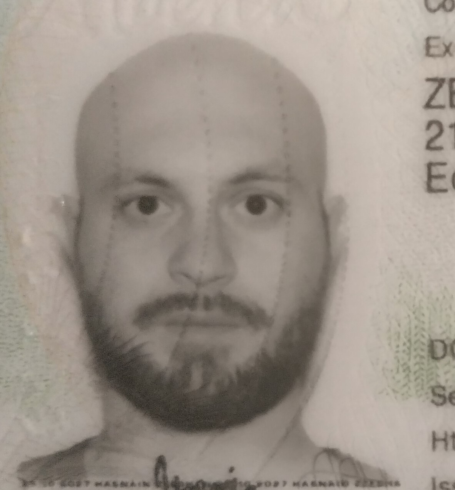

Summary

I am a web developer with a background of medical sciences. I am proficient in python, SQL & web dev.
Education
University of Alberta, September 2012-June 2017
- Bachelor of Science
- Major: Biological Sciences
- Minor: Economics
University of Galway (NUI Galway) School of Medicine, September 2017-August 2023
- Bachelor of Medical Sciences
Work Experience
Dollarama, Sales Associate, June 2013-August 2013
- Processed purchases and returns during rush hours, ensuring quick and high quality customer service.
- Managed and organised store inventory under time limits to ensure >97% stock level with zero errors.
- Worked with colleagues to determine daily action plan
- Assisted customers in selecting products, answered questions, and shared knowledge on products and store policies.
- Gave customers fast, fun, and friendly service to ensure they have a great experience
- Created and updated customer profile records.
Skills
Programming
- Python
- SQL
- HTML & CSS
- Javascipt/Typescript
Medicine
- Deep medical knowledge
- Experience working in a medical team in both hospital and family clinic settings
My Projects
My Hobbies
Contact Me